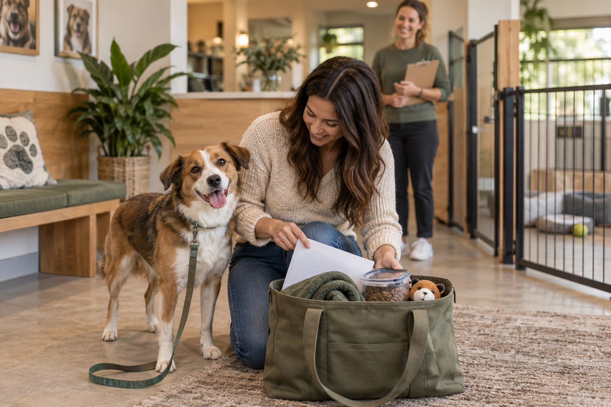

The Complete Dog Boarding Checklist

A good boarding stay begins long before drop-off. The real work is choosing a facility that fits your dog, translating your home routine into useful written instructions, and packing only what staff can identify, store and use safely. This checklist turns all of that into a calm timeline.
Researched by the CanMyPet Editorial Team · Published October 8, 2026 · Checked against the sources listed below.
- Confirm the drop-off window and the facility's exact document requirements.
- Pre-portion and label every meal if outside food is permitted.
- Write one page covering routine, handling preferences and contacts.
- Pack only items the facility has approved.
- Send the final contact and authorization details to the person staying reachable during your trip.
Four weeks before: choose the right type of care
“Boarding” can mean a traditional kennel, a small home-based service, a veterinary-supervised facility or a sitter staying in your home. The best choice depends less on which option looks fanciest and more on how well the daily setup matches your dog.
Traditional facility
Useful for predictable staffing, dedicated spaces and clear check-in procedures. Ask how much individual attention is included versus sold as an add-on.
Home-based boarding
May feel more household-like, but ask how residents, visiting dogs, doors, yards and sleeping arrangements are managed.
Veterinary boarding
Can be a practical fit when a dog needs closer professional oversight. Confirm staffing and services rather than assuming the hospital is continuously occupied.
In-home sitter
Keeps the environment familiar. Clarify exactly when the sitter arrives, how long visits last and whether they stay overnight.
AAHA recommends assessing the environment in person and confirming that the caretaker can follow the dog's regular feeding, activity and special-care routine. A polished lobby is not the same as a sound operating process, so ask to see the areas your dog will actually use.
The facility tour: 18 questions worth asking
Bring these questions on your phone. The goal is not to catch staff out; it is to remove assumptions before money changes hands.
- Can I see the sleeping, exercise and transition areas?
- Who is physically on site overnight? “Monitored” can mean a camera, an alarm or a person.
- How are dogs grouped? Ask about size, play style, age and individual compatibility — not just “small” versus “large.”
- Can my dog opt out of group play?
- How much quiet rest is built into the day?
- How are doors, gates and leash transfers secured?
- What training and handling methods do staff use?
- How many staff supervise active dogs?
- What happens if two dogs are not a good match?
- What records are required, and when must they be submitted?
- May I bring my dog's normal food, bedding or toy?
- How are personal items labeled and stored?
- Can staff follow a multi-step feeding routine?
- What is the process for an unexpected veterinary need?
- Which veterinary clinic does the facility normally contact?
- How will you reach me, and what happens if I cannot answer?
- How and when are updates sent?
- What are the cancellation, late pickup and early-return policies?
What to look for during the tour
| Look for | Why it matters | Ask if unclear |
|---|---|---|
| Two-door or gated transitions | Adds a layer between a dog and an exterior exit. | “Show me how dogs move from check-in to their room.” |
| Clean, dry areas without strong odor | Shows how routine cleaning is managed between busy periods. | “What is the cleaning schedule?” |
| Secure fencing and intact latches | Small gaps and improvised closures deserve questions. | “How often are gates and fences inspected?” |
| Quiet spaces away from active groups | Dogs need a place to rest without constant traffic. | “Where does my dog sleep and decompress?” |
| Clear identification system | Food, rooms, belongings and instructions should stay attached to the correct dog. | “How do staff verify each dog at handoff?” |
| Staff willing to explain the routine | Specific answers are more useful than promises that every dog has fun. | “Walk me through a normal day.” |
Two weeks before: rehearse the stay
If the facility offers introductions, consider a brief visit, daycare session or single overnight before a long trip. This is not a pass-or-fail test of your dog. It is a systems test: check-in, food labeling, communication, rest and pickup all get a practice run while you are nearby.
Afterward, ask for concrete observations. Did your dog eat the supplied meal? Where did they choose to rest? Did they prefer solo activity or a compatible group? Was any part of the written routine difficult to follow? Use the answers to simplify the final instructions.
The one-page boarding instruction sheet
Staff need a page they can scan during a busy shift, not a memoir. Put your dog's name and your travel dates at the top, then use short headings:
- Contacts: your phone, your time zone and the best hours to reach you.
- Alternate decision-maker: name, relationship and phone number.
- Veterinary contact: regular clinic, phone number and any facility-requested authorization.
- Food: exact container or bag for each meal, meal times and what the facility should do with an unfinished meal.
- Routine: usual wake-up, bathroom, activity and bedtime pattern.
- Handling preferences: equipment used at home and any situations staff should approach slowly.
- Social preferences: solo care, known play style and whether group participation is permitted.
- Comfort cues: familiar words for bathroom trips, settling and getting into a room or crate.
- Approved belongings: list each item so it can return home.
- Pickup plan: authorized pickup person and expected window.
The 2023 AAHA Senior Care Guidelines recommend leaving the caregiver the owner's contact number and time zone, identifying the sitter, providing decision-making authorization, explaining payment arrangements for unexpected care and naming another authorized representative. Those details are sensible for any boarding plan, not only senior dogs.
What to pack for dog boarding
Documents and contacts
- Facility reservation confirmation and check-in instructions
- Records specifically requested by the facility, submitted before its deadline
- Printed one-page care sheet plus a digital copy
- Your contact details and time zone
- Alternate contact and pickup authorization
- Regular veterinary clinic details and the facility's requested care authorization
Food and feeding supplies
- Enough familiar food for the stay plus the facility-approved buffer
- One clearly labeled portion per meal, if that is how the facility accepts food
- Written meal instructions that match the labels
- Only treats and feeding tools the facility has approved
Ask whether staff prefer individual bags, one sealed container or food in its original packaging. Never assume there is refrigerator or freezer space. If you use a scoop at home, convert “one scoop” into an unambiguous amount on the facility's own form.
Gear and comfort items
- Well-fitted leash, collar or harness requested for check-in
- Current identification attached as appropriate
- One washable comfort item, if permitted
- One simple familiar toy, if permitted
- Carrier or crate only when the facility specifically asks for it
Leave irreplaceable blankets, complicated toys and sentimental items at home. Boarding belongings get washed, moved and occasionally misplaced. A small labeled item that staff can safely manage is more useful than half the living room.
Medication and special-care logistics
If your dog has ongoing care, confirm before booking that the facility is able and willing to follow it. Use original labeled containers and the facility's written forms exactly as requested. Do not change instructions for the stay without speaking to the prescribing veterinarian, and do not use this checklist to determine doses or timing.
What not to pack
- Rawhide, fragile chews or food items the facility has not approved
- Loose containers without your dog's name
- A large bag of food with no measuring instructions
- Retractable leash unless specifically requested
- Expensive beds or one-of-a-kind toys
- Anything with loose pieces, batteries or long cords
- Last-minute calming products or supplements not already discussed with your veterinarian and the facility
48 hours before check-in
- Reconfirm the address, check-in window and after-hours number.
- Send any remaining forms rather than carrying the only copy.
- Check every food label against the written schedule.
- Photograph the packed items and instruction sheet for your records.
- Confirm who will remain reachable while you travel.
- Keep the home routine steady; avoid turning packing day into an all-day event for the dog.
Drop-off: calm, clear and short
Arrive with enough time to answer questions, but avoid a long emotional goodbye in a busy lobby. Hand the leash directly to the staff member, point out the one-page sheet, confirm the best contact number and leave once the handoff is complete. AAHA's boarding guidance similarly recommends a brief, calm farewell rather than escalating the moment with prolonged excitement.
Before walking away, confirm four facts: the dog has been checked in under the correct name, the food count matches the stay, staff have your authorization details, and the pickup window has not changed.
Updates without refreshing your phone all day
Agree on communication before the stay. Some facilities send a daily photo; others contact owners only when they need a decision. Ask what the standard service includes, who sends messages and which number appears on caller ID. If you want an update after the first night, request it at booking rather than assuming it will happen.
Give staff a priority order: call you first, then the alternate contact, then follow the written veterinary authorization if neither person can be reached. Clear authority is more valuable than five contacts who all think someone else will answer.
Pickup day and the 10-minute debrief
At pickup, collect the instruction sheet, remaining food and belongings, then ask a few practical questions:
- How consistently did the routine work?
- Which activities or rest setup did the dog prefer?
- Was any item missing, unused or difficult to manage?
- Would staff change anything for a future stay?
- Are there notes or photos you should keep with the boarding file?
Write the answers down when you get home. Future-you will not remember whether the facility wanted breakfast in separate bags or why the squeaky toy stayed in the car.
The reusable master checklist
- Tour completed and policies understood
- Trial visit considered or completed
- Booking dates, drop-off and pickup windows confirmed
- Required records submitted by facility deadline
- One-page care sheet printed and saved digitally
- Primary and alternate contacts verified
- Veterinary contact and authorization completed
- Food pre-portioned and labeled to facility policy
- Approved gear and comfort items labeled
- Medication or special-care process confirmed directly with facility and veterinarian
- Packed-items photo saved
- Update schedule agreed
- Pickup person authorized
- Post-stay notes saved for next time
Frequently asked questions
What should I pack when boarding my dog?
Pack the facility's required records, pre-portioned food if allowed, written feeding and routine instructions, a labeled leash or harness, approved comfort items, your contact details, an alternate contact and written veterinary authorization. Follow the facility's packing rules because storage and safety policies differ.
Should I tour a dog boarding facility first?
Yes. A tour lets you see the sleeping areas, fencing, cleanliness, supervision and handling process, and gives you a chance to ask how staff manage feeding, group play, rest, emergencies and overnight coverage.
Is a trial stay worth it before a long trip?
A short daycare visit or overnight trial can reveal practical issues with check-in, feeding, rest and pickup before a longer booking. Ask the facility whether it offers an introductory stay appropriate for your dog.
Should I bring my dog's bed and toys?
Only if the facility allows them. Choose washable, replaceable items, label everything and leave sentimental belongings at home. Some facilities restrict bedding or toys for safety and cleaning reasons.
Sources
- American Animal Hospital Association — 6 Tips to Prepare Your Pet for Summertime Boarding (2024)
- AAHA — 2023 Senior Care Guidelines for Dogs and Cats (caregiver authorization and contact planning)
- AAHA — Canine Life Stage Checklist (boarding, transportation and lifestyle discussion)
- USDA APHIS — Veterinary Care for Dogs at Regulated Facilities (facility veterinary-care oversight)
For general planning information only. Facility rules and local requirements vary. Health, medication and vaccination decisions belong with your veterinarian and the boarding facility's current written policy.